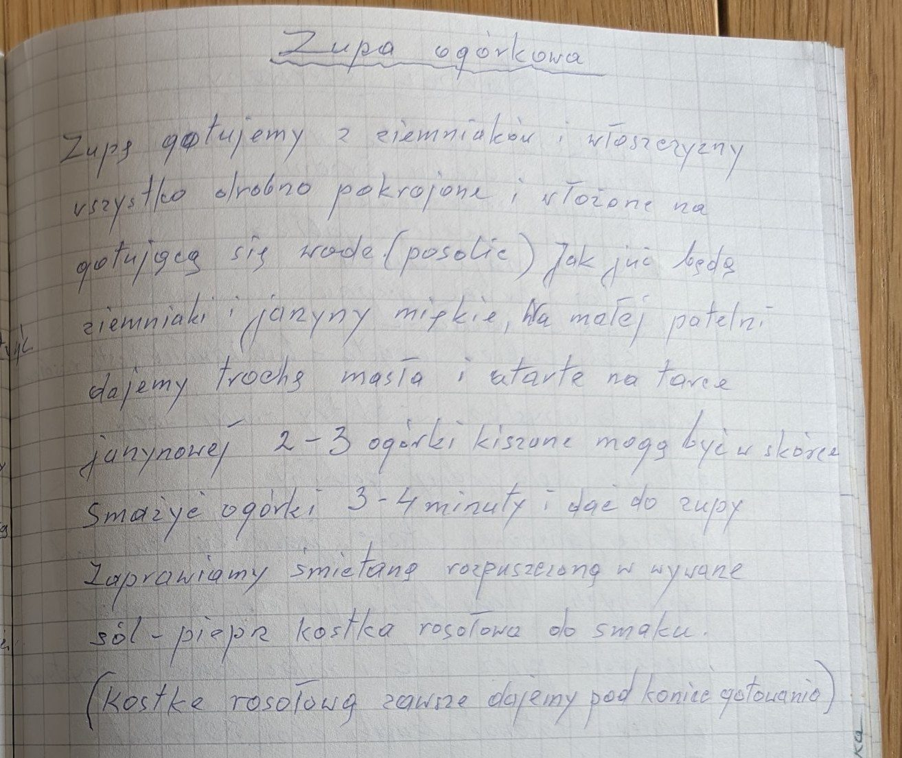

Zupa ogórkowa


Składniki
- ziemniaki
- włoszczyzna
- sól, pieprz
- trochę masła
- 2-3 ogórki kiszone
- śmietana
- kostka rosołowa
Przygotowanie
- Ziemniaki i włoszczyznę drobno pokroić, włożyć do gotującej się wody i posolić.
- Gdy będą miękkie, na małej patelni rozgrzać trochę masła.
- 2-3 ogórki kiszone zetrzeć na tarce jarzynowej (mogą być w skórce) i smażyć 3-4 minuty, dodać do zupy.
- Zaprawić śmietaną rozpuszczoną w wywarze, doprawić solą, pieprzem i kostką rosołową – kostkę zawsze pod koniec gotowania.
Oryginalny zapis
Zupa ogórkowa Zupę gotujemy z ziemniaków i włoszczyzny wszystko drobno pokrojone i włożone na gotującą się wodę (posolić) Jak już będą ziemniaki i jarzyny miękkie. Na małej patelni dajemy trochę masła i utarte na tarce jarzynowej 2-3 ogórki kiszone mogą być w skórce Smażyć ogórki 3-4 minuty i dać do zupy Zaprawiamy śmietaną rozpuszczoną w wywarze sól – pieprz kostka rosołowa do smaku. (Kostkę rosołową zawsze dajemy pod koniec gotowania)